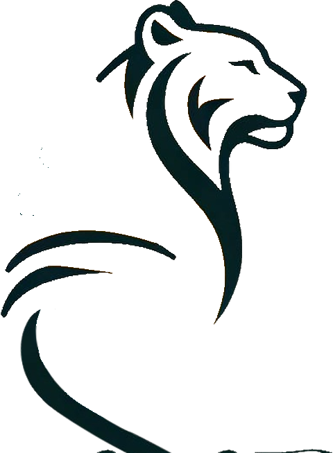
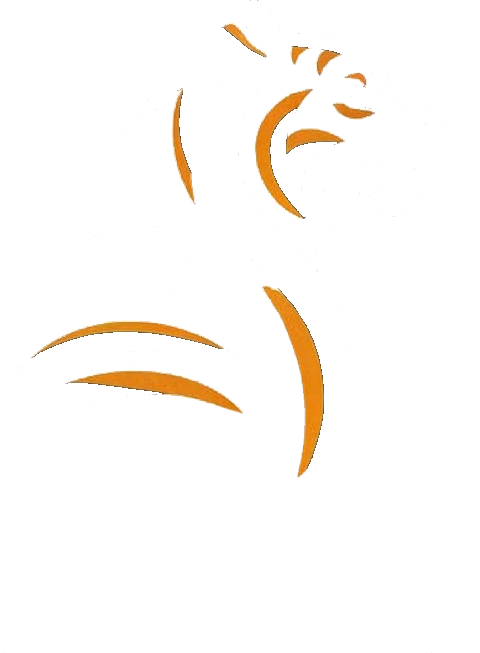
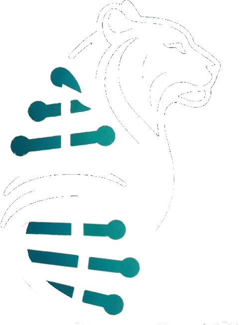

Logo motion options
Seven ways the TGGR logo could move on the lab page. Each is built from the ring of text and the tiger split into its ink, teal and orange layers, so any of them can be combined.
The ring turns
One slow revolution every 80 seconds, the tiger still. Pauses under the pointer. The one in mockup E.

Two rings, opposite ways
The lab's name on the outer ring, the institute on the inner, turning against each other.
The rungs light up
The teal base pairs brighten in a wave down the helix, like a read coming off a sequencer. Glows in dark mode.



Drawn on
On page load the tiger appears in three passes: ink, then stripes, then rungs, then the name and the ring. Once, then still.
Follows the pointer
The three layers shift at different depths as the pointer moves, the ring leans with it, and the tiger breathes. Move the mouse over it.
Unzips on hover
Hovering pulls the teal rungs out of the helix and the stripes the other way, and the ink fades back. It closes again when you leave.
Turns with the page
The ring is driven by scrolling: it moves only when the reader does, and stops when they stop. Scroll this page to see it.
Combinations that work: 4 then 1 (drawn on once, then the ring keeps turning) is the natural one for a page header. 3 belongs in dark mode. 5 and 6 are for the hero, where there is room to play. 7 suits a small logo in a sticky rail. Cost: the layered version is three images instead of one, about 240 KB, and all of it respects reduced-motion settings.